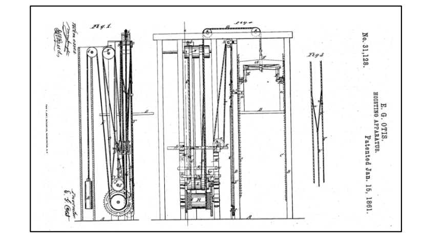
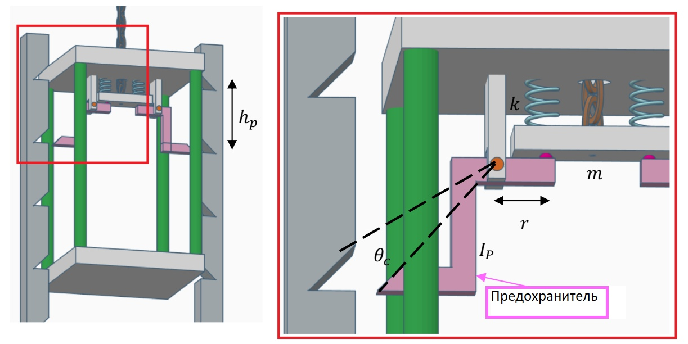
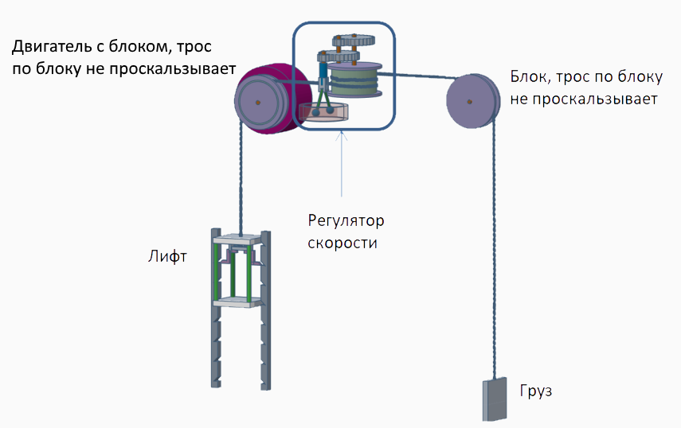
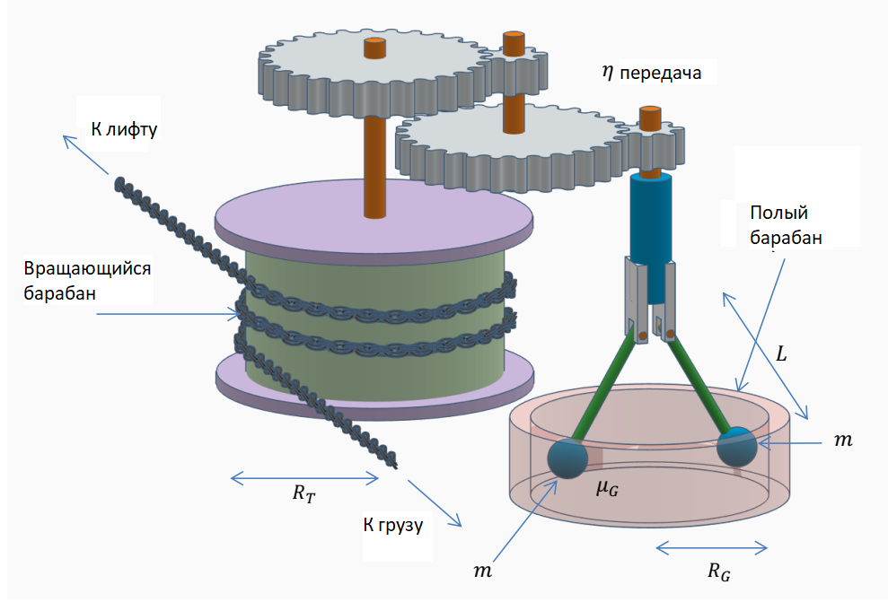

X20 (2020) — English translation
In 1854, at the World's Fair in New York, Elisha Otis first demonstrated the safety mechanism for his elevator to the applause of the public. Elisha took the elevator to the height of the fourth floor, and his assistant, meanwhile, cut off the cable that was holding the elevator - all this while Elisha himself was inside the elevator! Fortunately, the safety mechanism worked and the elevator stopped after a short fall. The insurance mechanism thus saved the life of its inventor several times in a row. In this problem we will consider two elevator insurance mechanisms.
The part that was so dramatically demonstrated at the exhibition was the emergency brake.


The principle of operation of the mechanism: In the normal state, the cable that holds the elevator is highly tensioned and compresses two springs (each with an elasticity coefficient of $k=30~\text{кН/м}$). When the cable is cut, the springs are released and the beam, weighing $m = 10 ~\text{kg}$, falls down relative to the elevator. This, in turn, causes the fuses to rotate so that their ends fit into recesses in the rails on either side of the elevator. The recesses are located at the same distance $h_p=0.15~\text{м}$ along the entire height of the rails. The moment of inertia of each fuse (relative to the axis of rotation) $I_p=3~\text{kg}\cdot\text{м}^2$. The distance from the axis to the pressure point on the fuses on the side of the beam is $r=0.3~\text{м}$ In order for the fuse to fit into the recess opposite, it must rotate at an angle $ \theta =6 ^{\circ} $ from its original state. If the fuse were turned at an angle $12^{\circ}=2\theta~\ll~90^{\circ}$, then the springs would be completely unstretched. The mass of the empty elevator is $M=300~\text{kg}$, and the mass of Otis along with his belongings is $m_1=200~\text{kg}$. Gravity acceleration $g=10~\text{m/s}^2$.
From the previous paragraphs it is clear that the elevator should be equipped with additional means of protection against falling at high speed. The speed controller is the mechanism that will provide appropriate protection. Below are the data for the parameters shown in the figure: $R_T=1.1~\text{м},~R_G=0.4~м,~\mu_G=0.3,~L=0.5\text{м},~m=12~\text{kg},~\eta=6.$ The speed controller consists of several parts: – A rotating drum on which the cable is wound. An elevator is suspended on a cable on one side, and a balancing weight on the other. The drum is very rough so there is no slipping between it and the cable. – Gear with gear ratio $\eta$, which connects the rotating drum with the rapidly rotating axle. – A rapidly rotating axis, two pins (rods) with weights at the lower ends are hinged on it. The pins can swing away from the axis depending on the angular speed at which they move. – A hollow drum inside which the pins rotate. The transmission creates a situation in which the loads move at a greater angular velocity than the rotational speed of the rotating drum. The speed is high enough for the weights to open up and touch the inner walls of the drum, and the friction between the weights and the drum is able to regulate the speed of the elevator so that it is not too high.


Modern elevators are designed to operate with as little energy consumption as possible. We study the energy consumption of an elevator in a modern office building. Building height $H=43~\text{м}$. The empty mass of the elevator is $M_E=800~\text{kg}$, in addition the elevator can carry a maximum of $M_{max}=1200~\text{kg}$. Rated speed of the elevator $\upsilon=1.25~\text{м/c}$, rated acceleration of the elevator $a=1.0~\text{м/c}^2$ Mass of the balancing load $M_c=1300~\text{kg}$. The efficiency of the electric elevator motor is $\eta=0.83$.
The portion of time the elevator moves during the day $D=10\%$. For simplicity, we will assume that half the time the elevator travels fully loaded, and half the time it is empty. During each trip, the elevator travels the entire height of the building, the number of ascents is equal to the number of descents. In this model, the elevator operates exclusively as an energy consumer, that is, it brakes using brakes, which convert all the kinetic energy from the movement of the elevator into heat. Also, when the elevator descends full, the motor does not supply electricity, but the brakes must work during the descent.
Average electricity tariff: $\frac{C}{E}=6~\frac{\text{руб}}{\text{кВт}\cdot \text{ч}}$.
In order to reduce these costs, you can purchase an elevator with an energy storage system (for example, with a battery, flywheel, supercapacitors), which will allow you to waste less energy. In such a system, the electric motor that drives the elevator will act as a generator in a situation where the mechanical energy of the elevator is reduced (for example, when the elevator is descending when fully loaded). The efficiency of the generator is equal to the efficiency of the electric motor: $\eta_{gen}=\eta=0.83$.
Source: https://pho.rs/p/21